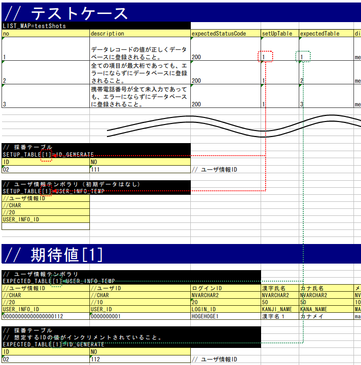
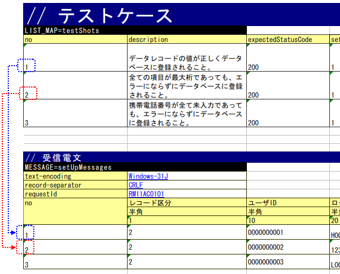

3.1.12. How to Execute a Request Unit Test (Receiving Synchronous Message Process)¶
3.1.12.1. How to write a test class¶
The test class should be created in such a way that the following conditions are met.
- The test class package should be the same as the Action class to be tested.
- The test class should be created with the class name <Action class name>RequestTest.
- Inherits
nablarch.test.core.http.MessagingRequestTestSupport.
For example, if the Action class to be tested is nablarch.sample.ss21AA.RM21AA001Action,
the test class would be as follows.
package nablarch.sample.ss21AA;
// ~ Middle is omitted ~
public class RM21AA001ActionRequestTest extends MessagingRequestTestSupport {
3.1.12.2. Test method division¶
In principle, one test method and one test sheet per test class.
If the case is complex or the data volume is large, the method or sheet can be divided.
3.1.12.3. How to write test data¶
The Excel file containing the test data should be stored in the same directory with the same name as the test source code, same as in the class unit test (only the extension differs).
For information on how to write test data, refer to Test data description using Excel.
3.1.12.3.1. Common database initial values for test classes¶
The same applies for web applications. See Common database initial values for test classes.
3.1.12.3.2. Test shot List¶
The test shot table for one test method is described in the data type of LIST_MAP. The ID is testShots.
Each case should have the following elements:
| Column name | Description | Required |
|---|---|---|
| no | Write the test case numbers sequentially from 1. | Required |
| description | Write an explanation of the test case. | Required |
| expectedStatusCode | Expected status code - | Required |
| setUpTable | When registering in the database before each test case execution, the group ID of the data described in the same sheet should be described [1]. Data is input by an automated test framework. | |
| expectedTable | escribe the group ID of the expected table when comparing the contents of the database. [1] | |
| expectedLog | Describe the ID of the expected log message. The automated test framework verifies whether the log message was actually output. | |
| diConfig | Describe the path to the component configuration file when executing the resident process. See (Command line arguments)[2] | Required |
| requestPath | Describe the request path when executing the resident process. See (Command line arguments)[2] | Required |
| userId | Describe the resident process execution user ID. See (Command line arguments)[2] | Required |
| [1] | (1, 2) To use the default group ID (but not the group ID), write default. Default group ID and individual groups can be used together. When both data are mixed, both data of the default group ID and data of the specified group ID are valid. |
| [2] | (1, 2, 3) The “resident process” here refers to the process of sending and receiving messages. |
3.1.12.3.3. Various preparation data¶
This section explains how to describe the various preparation data required for testing. The database and request message are prepared in batches.
3.1.12.3.3.1. Database preparation¶
Map with groupID in the same way as online.
If there is no setUpTable column or it is blank in the Test shot List, the database is not prepared.
3.1.12.3.3.2. Request message¶
The request statement that is the input data for the test is described. An example is shown below.
MESSAGE=setUpMessages
// Common information (directives, framework control headers)
text-encoding Windows-31J record-separator CRLF requestId RM11AC0101 // Message body
no Record classification User ID 半角 半角 1 10 1 7 0000000001 2 2 0000000001
- First line
Prepare a request message for the request to be tested. The name should be fixed toMESSAGE=setUpMessages.
- Common information
Enter the following information in the next line after the name. These values are common to all request messages.
- Directive
- Framework control header
The format is in key-value format.
Key Value
Important
If the item of the framework control header is changed by project,
it is necessary to specify the framework control header name with the key reader.fwHeaderfields in the properties file as follows.
# Specify the framework control header name separated by a comma.
reader.fwHeaderfields=requestId,addHeader
- Message body
Describe the messages after the framework control header. The first to third rows are the same as the description of the external interface design document, and it can be efficiently created by transposing and copying the matrix from the design document.
行 Description content Remarks First line Field name First cell is set to “no” Second line Data type First cell is blank Third line Field length First cell is blank From fourth line Data The first cell is a serial number from 1
Important
Duplicate names are not allowed for field names. For example, there should be not more than 1 field named as “Name”. (Usually, in such cases, a unique field name is assigned, such as “member name” and “family member name”)
This table corresponds to no in the test shot list. In other words, the request message used in the test shot no1 is the data of the first row of the table (no 1).
3.1.12.3.4. Various expected values¶
When comparing the search results and database with expected values, link each data with the list of test cases using ID.
3.1.12.3.4.1. Response message¶
Same as Request message.
However, the name is MESSAGE=expectedMessages.
The assertion method of the response message changes as follows depending on the file-type value configured in the test data directive.
File-type value Assertion method Fixed or not specified Assert the message after dividing into each item described in the test data. Other value Assert the entire message by handling it as a character string.
Note that the file-type has to be configured in the test data and not the format definition file.
The value of file-type that asserts each item can be changed by defining the following values in the environment configuration file.
messaging.assertAsMapFileType=<comma delimited file-type list>
Tip
3.1.12.3.4.2. Expected database status¶
Link the expected database status with the test case list in the same way as Database preparation .
3.1.12.4. How to write a test method¶
3.1.12.4.1. Super class¶
Inherits MessagingRequestTestSupport.
In this class, the request unit test is executed by the following procedure based on the prepared test data.
3.1.12.4.2. Create a test method¶
Create a method corresponding to the prepared test sheet.
@Test
public void testRegisterUser() {
}
3.1.12.4.3. Call a superclass method¶
In the test method, call one of the following methods of the superclass.
- void execute()
- void execute(String sheetName)
In the execute method with arguments, the sheet name of the test data can be specified. If the execution method without arguments is used, the operation will be the same as when the test method name is specified in the test data sheet name in the execution method with parameters.
Since the test sheet name and test method name are usually the same, execution method without arguments should be used.
@Test
public void testRegisterUser() {
execute(); // [Description] Equivalent to execute ("testRegisterUser").
}
3.1.12.5. How to launch the test¶
Same as the class unit test. Execute the test in the same way as a normal JUnit test.
3.1.12.6. Test result verification¶
The following results are verified by the automated test framework.
- Result verification of the response message (required)
- Result verification of database
- Log result verification
Database and log result verification is skipped if there is no description of the expected value in the Test shot List (if it is blank).